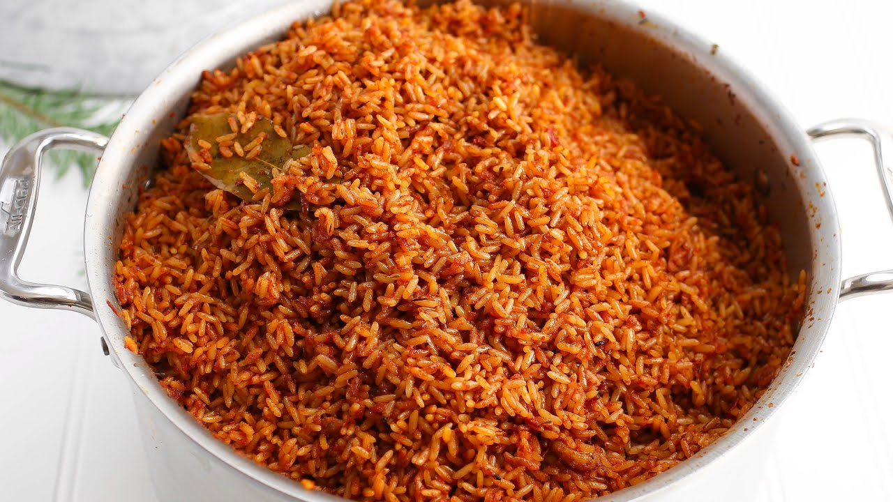

Nigerian Jollof Rice

A much loved dish South of the Sahara and along the coast of West Africa is Jollof Rice.
A staple dish in every Nigerian home. It can be eaten as an everyday dish or as a dish for special occasions.
This tasty recipe for Nigerian Jollof will blow your mind at how incredible and delicious it is.
Ingredients
- 1/3 cup oil (any type but canola)
- 6 medium-sized fresh roma tomatoes chopped OR a 400 gram can of tomatoes
- 4 large red bell peppers (seeds discarded)
- 3 medium-sized red onions (1 sliced thinly, 2 roughly chopped)
- 1/2-1 yellow scotch bonnet pepper
- 3 tablespoons tomato paste
- 2 teaspoons curry powder
- 1 teaspoon dried thyme
- 2 dried bay leaves
- 5-6 cups stock(chicken, vegetable or beef)
- 2 teaspoons unsalted butter(optional)
- 4 cups rinsed, uncooked long grain rice
- salt and pepper to taste
Cooking Instructions
- In a blender, combine tomatoes, bell peppers, chopped onions and yellow scotch bonnet pepper with 2 cups of stock, blend till smooth (about a minute or two). You should have roughly six cups of the mixture. Pour into a large pot and bring to a boil then turn down and let simmer, covered for 10-12 minutes.
- In a large pan, heat oil and add sliced onions. Season with a pinch of salt, stir-fry for 2 to 3 minutes, then add the bay leaves, curry powder and dried thyme and a pinch of black pepper for 3-4 minutes on medium heat. Then add the tomato paste- stir for another 2 minutes. Add the reduced tomato-pepper-scotch bonnet mixture, stir, and set on medium heat for 10-12 minutes till reduced by half, with the lid on. This is the stew that will define the pot.
- Add 4 cups of the stock to the cooked tomato sauce and bring it to boil for 1-2 minutes.
- Add the rinsed rice along with 1 teaspoon of butter, stir, cover with a double piece of foil or parchment paper and put a lid on the pan- this will seal in the steam and lock in the flavour. Turn down the heat and cook on low for 30 minutes.
- Stir rice- taste and adjust as required.
- If you like, add more sliced onions, fresh tomatoes another teaspoon of butter and stir through.